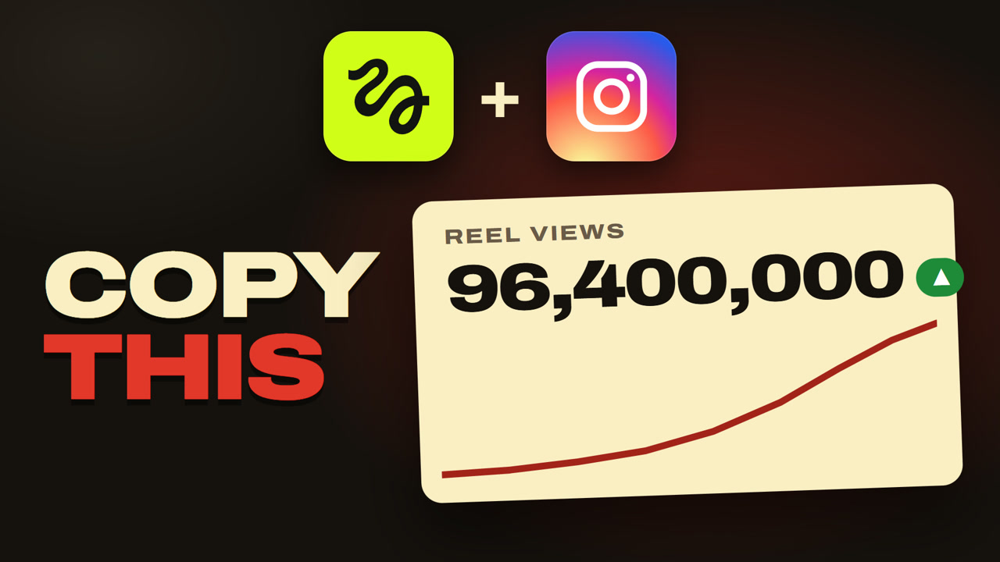

The 7 moves behind viral AI videos
The checklist from my episode "Give Me 9 Minutes and I'll Make You Disgustingly Good at AI Video". Seven moves, the prompts I paste and the three things that make AI video look fake. Copy it tonight.
The 7 moves
Start with a character sheet, not a prompt
Type "a red-haired detective" ten times and you get ten different detectives. So make one image of your character first: front, side and back, same outfit, same flat light, plain background. Give them one detail people remember, like a red coat. Every shot after that uses the sheet as its reference, with one face per reference image.Photorealistic character reference sheet of the same person, on a plain light-grey studio background: 1. Full body front view, head to feet, neutral stance. 2. Full body side view. 3. Full body back view. 4. Head-and-shoulders close-up, straight on. 5. Head-and-shoulders profile. Character: [age, build, face, hair, skin]. Wardrobe: [outfit], plus one detail people remember: [for example a long red coat]. Real skin texture with visible pores, no retouching, no beauty filter. Flat, even soft light. Same face, body and outfit in every view. No text, no logos, no extra people.
One shot, one action
Ask for five things in one clip and the model does all five badly. Give it one action per shot, then put the shots together in the edit.- A reaction: about 2 seconds.
- Something crossing the frame: 4 to 5 seconds.
- Much longer than that and, in my experience, the model starts making things up.
Talk like a director, not like a poet
Every prompt answers three questions: what does it look like, what is the one thing happening, and where is the camera. Start with the look and name a real camera instead of writing "cinematic". If someone talks, put the exact words in quotes and give a short sentence about 6 seconds, or the model swallows words.Video style: iPhone front camera, held at arm's length, handheld with slight shake, no color grading. Action: [the ONE thing that happens, for example: she sips her coffee and looks up at the camera]. Camera: [one move, for example: slow push-in, then a quick snap zoom into her face]. Everyone in the frame keeps moving: people talk, turn, laugh, check their phones. She says: "[exact words, one short sentence]"
Fix it in the image, then animate
Images are cheap, video is expensive. Make the exact first frame as an image, fix it there, and only then turn it into video with that image as the first frame. Change one thing at a time: the jacket, then the background, then the light. Change five things at once and you usually lose the face. A free image model like Gemini is enough for the sheet and the first frame.Keep the person's face, hair, body and outfit exactly the same. Change only [one thing, for example: the background to a rainy night street]. Keep the same framing and light direction.
Draft first, pay later
Seedance 2.5 has a draft mode: generate at 480p for a fraction of the price, look at the take, and finalize that same take in full HD only when it's right. You pay full price only for the shots you keep. For your most important shot, make a few drafts, not one. The first take is rarely the best. Same rule in any tool: rough and cheap first, then make the winner beautiful.Make everything move, and make it sound real
Frozen people in the background are the first thing viewers notice, so write "everyone keeps moving" into every prompt. Faces too: real people don't hold one expression. Then sound, in three layers: the room, the actions, and one small detail that makes you smile. A good picture with real sound feels real. A perfect picture in silence still feels like AI.Edit it like a reel, not like a movie
- Hook in the first second: you can even open on the ending.
- Something new every couple of seconds: a cut, or a snap zoom on the beat.
- End a little earlier than feels right, so they watch it again.
- Watch it once with the sound off. If it still works, your pictures are strong.
I let Claude cut the first version. My prompt:
Cut these clips into one vertical reel. Rules: the strongest moment goes in the first second. Something new happens every 1 to 2 seconds: a cut or a quick zoom on the beat. One action per shot, trim any dead frames at the start and end of each clip. End about one second earlier than feels natural. Show me the cut list before you render.
Claude does the boring part. Which shots make people laugh is still your call.
The 3 things that scream "AI"
- Plastic skin. Ask for matte skin with visible pores.
- The frozen crowd. Everyone in the frame keeps moving.
- The too-perfect camera. Real phones shake a little, refocus and overexpose. Ask for that.
Matte skin with visible pores, no retouching. Everyone in the frame keeps moving. Handheld phone camera with slight shake, small refocus and a little overexposure, like a real person filmed it.
One trap: don't chase the newest model every week. A great prompt on an older model beats a lazy prompt on the newest one.
Seven moves get you to good. Ten reels get you to viral.
Knowing the checklist is the start. What makes you better fast is posting, seeing where people stop watching and fixing one move at a time. Inside my community I take apart every reel I post, with the prompts, the edit and what each shot cost, and I reply to yours. Claude Code runs the rest of my content every day. Under a minute:
Under a minute, sound on. The presenter is my AI clone, made with the methods taught inside.
Join AI Virality Creators →$9/month until the group reaches 150 members, then $27/month. The price you join at stays yours.
What you get inside
A path for complete beginners
START HERE takes you from zero to your first consistent AI character, lesson by lesson. Then Go Viral: 8 short lessons and cheat sheets for Reels and TikTok.
Every reel I post, taken apart
The prompts, the edit choices and what each shot cost in credits. You copy what already worked instead of guessing.
Claude Code, in plain English
Master Claude Code: real builds with every file included. Claude writes the code; you say what you want and approve each step.
30+ courses on today's tools
Kling 3.0, Veo 3.1, Nano Banana Pro, ElevenLabs voices, UGC and cinematic ads, prompt systems, 4K upscaling.
Feedback from me
Post your video in the community. I read it and reply myself, and other members add their notes.
From skill to client work
Modules on finding your first clients, pricing what you make and delivering it like a pro.
Your first week
- Day 1. Join, introduce yourself and say what you want to make. I point you to the module that fits.
- Days 2–4. Build your first AI character in START HERE, one short lesson a night. (Here for Claude Code? Start Master Claude Code instead.)
- Days 5–6. Open a reel breakdown and copy its structure for your own idea.
- Day 7. Post your first video in the community and get feedback on it.
Stop saving tutorials. Start posting.
AI Virality Creators is my Skool community. Everything above is in one place, in order, and I answer you myself.
- Every reel I post, taken apart: the character sheets, every video prompt, the cut and the credits, so you see the 7 moves on real reels.
- Go Viral: 8 short lessons and cheat sheets for Reels and TikTok.
- 30+ step-by-step courses and the breakdown of every reel, with prompts and credit costs.
- Personal feedback on what you post, next to 125+ creators building the same skills.
$9/month until the group reaches 150 members, then $27/month. The price you join at stays yours.
Before you join
I'm a complete beginner. Is this too advanced?
Not at all. START HERE assumes zero experience and goes in order: your first image, your first video, then a character that looks the same in every shot. If you can type a sentence, you can follow it.
I can't code. Do I need to?
You don't need to. For the Claude Code lessons you describe what you want in plain English, Claude writes the code, and you approve each step. Every lesson shows the exact clicks.
Do I need a Skool account? Can I use it on my phone?
Skool is the app the community lives in. Signing up is free and takes about a minute when you join, and it works in the Skool phone app or any browser. Watching lessons and posting work fine on a phone; Claude Code itself runs on a computer.
I don't have much time.
The lessons are short and numbered, so you always know which one is next. One lesson an evening keeps you moving, and the community keeps you posting.
Can't I learn all of this free on YouTube?
You can start there, and free guides like this one are made for exactly that. What you won't find for free: the right order, my real project files, the credit cost of every shot, and someone who looks at your video and tells you what to fix.
AI tools change every month. Won't it be outdated?
New tools get their own modules: Kling 3.0, Veo 3.1 and Nano Banana Pro are already in. The breakdowns teach how a reel is built, and that carries over to whatever tool comes next.
AI credits get expensive. What will I spend?
Every breakdown shows what each shot cost, so you know before you start. A lot of what I teach costs 0 credits, like the guide you're reading now.
Will I get lost in a big group?
It's around 125 people, small enough that new posts get answered. I reply myself, and members comment on each other's work.
Is the person in the video real?
The presenter is my AI clone, built with the same methods taught inside. I say so every time. The community is run by me, and I answer you myself.
Will this make me money?
I can't promise income. You get the skill, finished videos to show, and modules on finding clients and pricing your work. What you earn with them is up to you.
Is it only about video?
Video is the core. Master Claude Code is the second part: real builds with every file included, starting with the Night Shift experiment. Prompting, voices and client work are in there too.
What if it's not for me?
Cancel anytime in your Skool settings. You also have the guarantee: publish your first AI video within 30 days of joining, and if you can't, message me for a refund. The full terms are on the About page.
$9/month until the group reaches 150 members, then $27/month. The price you join at stays yours.
The reels in the episode
All made by other creators. Go follow them:
- Elsa by @theaicreatorcommunity: 3.3M views. The same faces in every scene, handheld camera, snap zooms on the beat.
- Hill Climb Racing POV by @zuni.hr: 96.4M views. Simple actions, one after another.
- Cinderella by @tapewarp.ai: 2.9M views in under a day. It opens on the ending.
- Cleopatra by @shlabu: 4M views. The cold open of the episode.